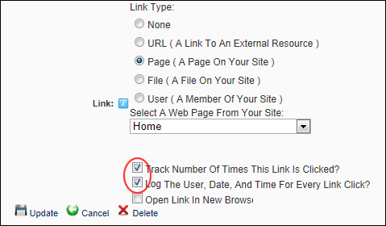

The Link Log, which forms part of the Link Control, can be enabled or disabled for each links. Once enabled it records the date and time that the link is clicked, as well as the first and last name of authenticated users. The Link Log is displayed on the Edit Item page of any logged links. Note: The following tutorials assume you are viewing the Link Control, either on a Settings page or whilst adding/editing an item such as a link on a module.
Important. The RadEditor has a different method for adding and managing link tracking.
To Enable the Link Log:

To Disable the Link Log: